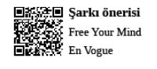

Brainstorming Profesyonelleri
Evrenin sırrını kolektif arayan beyinler...
Yıllardır fizikçiler Newton’ın klasik fizik teorisi, Einstein’ın görecelik kuramı ve Heisenberg’in kuantum fiziği arasındaki farkı bulmaya çalıştılar. Bu üç fizik yasası diğerlerini önemsemeden kendi kurallarına göre aynı evreni açıklamaya çalışır. Bu yüzden fizikçiler Hawking önderliğinde bir araya gelerek ve günlerce brainstorming yaparak ‘Büyük Birleşim Teorisi’ni kurdular. Böylece fizik kurallarının eksik kalan taraflarını birbirlerinden tamamlamaya çalıştılar. Evrenin sırrı brainstorming sinerjisi ile çözülmüştü.
Brainstorming, 1941 yılında Alex Osborn tarafından “Yağmurlu havada koşarken sakız çiğnersek daha mı çok ıslanırız?” sorusuna cevap aramak amacıyla organize edilen ve hatırı sayılır bilim adamlarının da katıldığı bir toplantı esnasında ortaya çıkmış; egosantrik rassal fikir üretim öğretisidir.